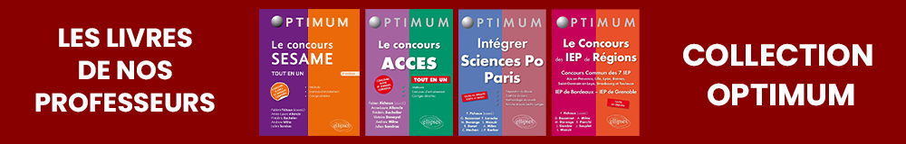

Les cours de Préparation à l’Enseignement Supérieur en classe de Terminale
Les nouvelles modalités du Baccalauréat et l’importance des dossiers scolaires dans les choix d’orientation
de l’Enseignement Supérieur nécessitent des dossiers scolaires très solides.
Cela vaut tant pour les bulletins scolaires du lycée et le contrôle continu que pour les résultats
aux épreuves du baccalauréat.
Dans ce contexte, nous proposons un accompagnement des élèves de Terminales tout au long de l’année dans les
matières de spécialités. Dans chaque matière, l’objectif est double :
Muscler les résultats scolaires et le niveau académique
Donner une méthode de travail permettant à l’élève d’adopter dès la classe de Terminale les méthodes de l’Enseignement Supérieur de haut niveau
Les cours sont dispensés par des professeurs de Grandes Ecoles et/ou de Classes Préparatoires.
Les cours en Terminale doivent :
Permettre aux élèves de considérablement solidifier leur niveau scolaire au Lycée en visant une amélioration de leurs notes de 2 à 4 points en moyenne.
Leur donner des Méthodes de Travail pour gagner en efficacité.
Anticiper leur entrée dans l’Enseignement Supérieur en leur donnant les bases nécessaires et les pré-requis à acquérir dès le Lycée pour s’ouvrir toutes les portes, et tout spécifiquement celles des filières les plus exigeantes dans le post-bac.
20 heures de cours par matière choisie.
Les cours commencent en septembre 2022 et se terminent en mai 2023.
Ils auront lieu les samedis (matins ou après-midis).
Il n’y a pas de cours pendant les vacances scolaires à l’exception de la deuxième semaine des
vacances de Toussaint.
Tarif pour 3 matières : 1650 euros
Tarif pour 4 matières : 2000 euros
Les Enseignements en Terminale
Culture Générale et Philosophie
Maîtrise de l'Oral
Préparation du Dossier et des Ecrits Personnels Sciences Po Paris
Anglais
Histoire et Géopolitique
Sciences Economiques et Sociales
Tarif Préparation IEP de Province
600 €